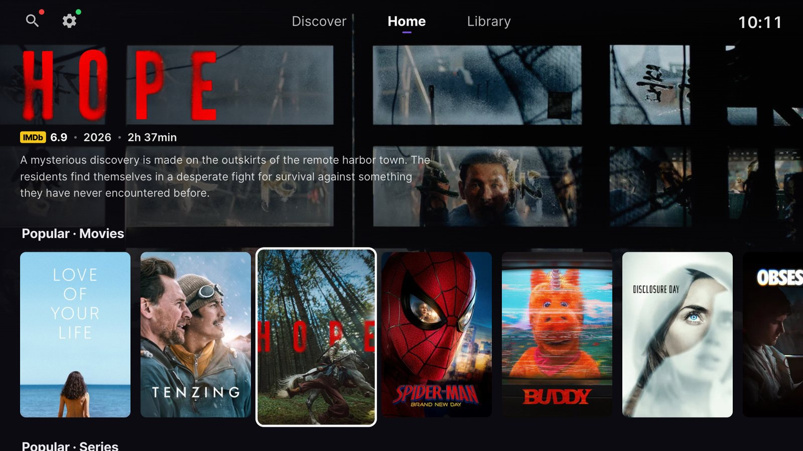
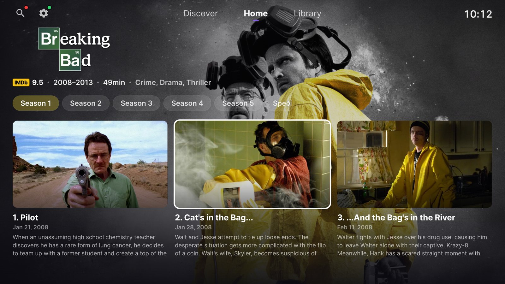
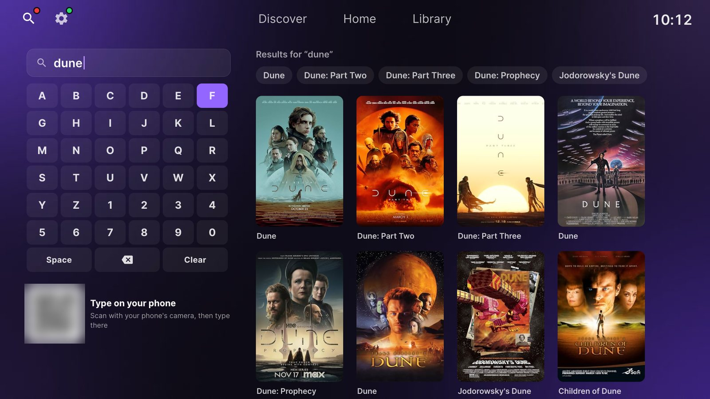
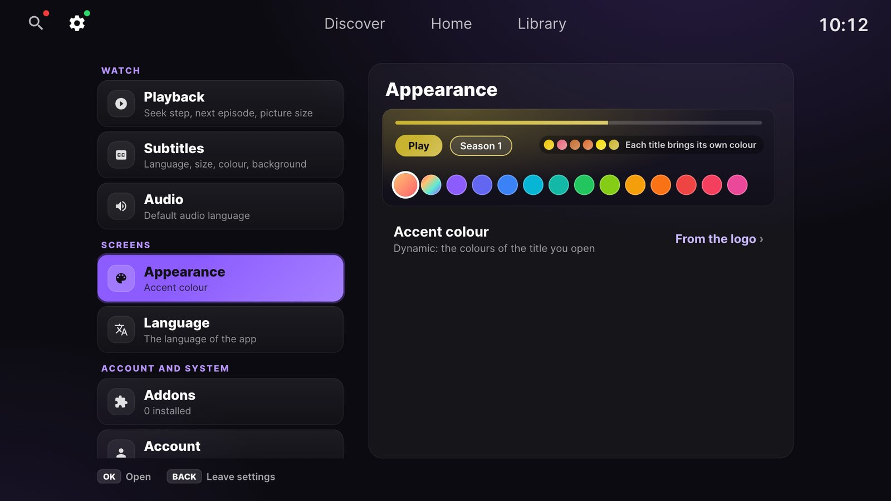

A client for rooted webOS 3+ TVs. Sign in with your Stremio account, use your own addons, and watch.
https://simussu9-wq.github.io/stremiobrew/apps.json 



Needs a rooted LG TV with the Homebrew Channel (webOS 3.0+, 32-bit ARM). Tested on webOS 4.4. The app ships empty and plays only what your addons return; nothing is sent to the developer.
GNU GPL v3 or later · Compatibility · Stremio™ is a trademark of Smart Code UG; this project is unofficial and not affiliated with Stremio or LG.